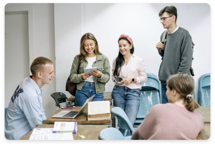

Ciências da Comunicação
Objetivo
/ Ciências da Comunicação

PROGRAMA DE ESTUDOS
O curso de licenciatura em Ciências da Comunicação propõe um percurso formativo que visa dotar os alunos das competências básicas necessárias ao exercício de todas as profissões em que a comunicação assume um papel primordial (do jornalismo aos sistemas editoriais, da comunicação pública à publicidade), e isto no quadro da um conhecimento crítico da interação entre os processos de comunicação e os fenómenos psicológicos, políticos, jurídicos e económicos que caracterizam a sociedade contemporânea
Para o efeito, o curso está estruturado em torno de um currículo único que visa permitir ao aluno adquirir:
(1) o conhecimento linguístico-semiótico, biopsicológico, lógico-informático, socioeconómico, histórico-político e filosófico necessário para investigar cientificamente as diversas formas de comunicação;
(2) as ferramentas de informática que hoje são o principal veículo dessas formas de comunicação;
(3) métodos próprios de investigação midiática e dinâmicas de uso e consumo;
(4) as competências críticas necessárias para analisar os contextos históricos, políticos, económicos, sociais e jurídicos dos processos de comunicação.
Este conhecimento é complementado por atividades laboratoriais (escrita, media, design eletrónico, análise e comunicação de dados, informática) relacionadas com objetivos específicos e atividades externas, como estágios de formação em empresas, bem como estadias em universidades de outros países europeus, acordos nacionais e internacionais.
O curso tem duração de três anos e está articulado no n. 180 UFC. O acesso ao curso é regido por um teste de acesso.